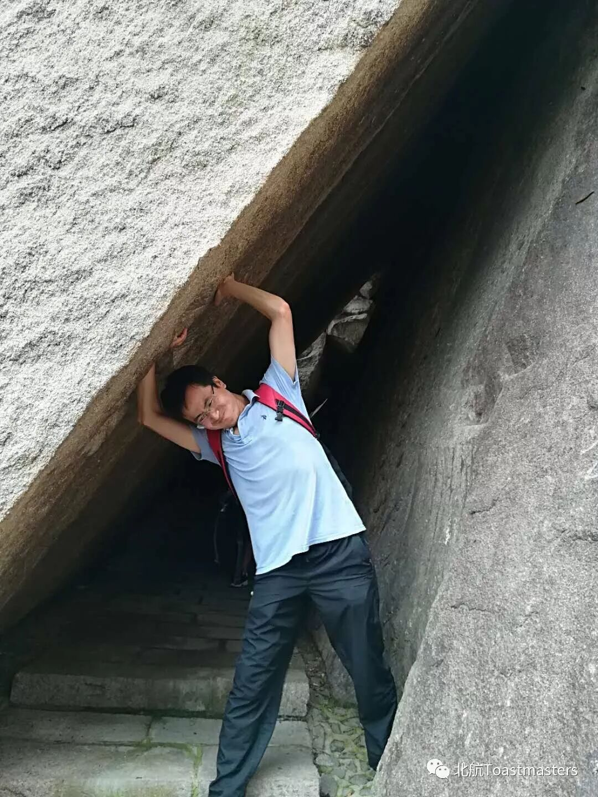
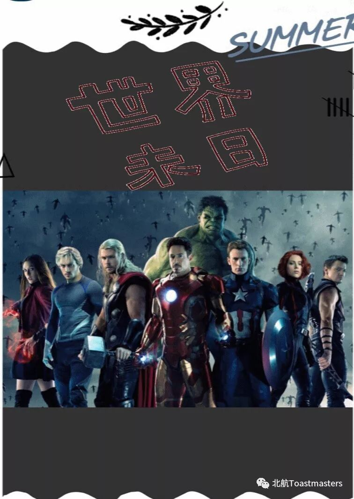
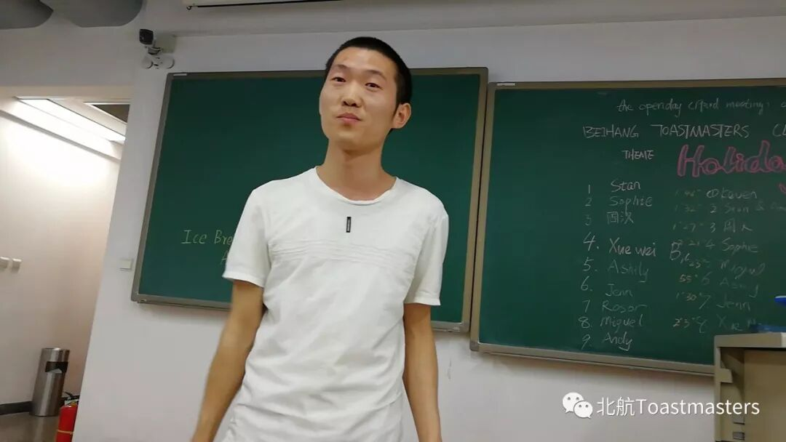
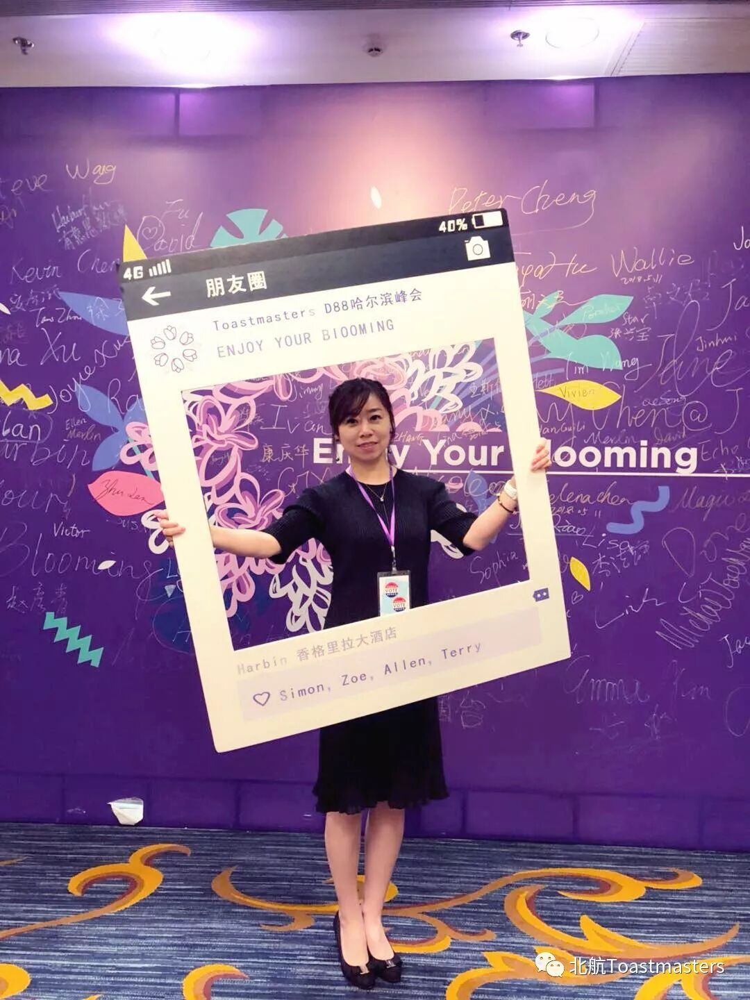

Time: 19:00-21:00, Friday, 25th May
Venue: Room B216, New Main Building, Beihang University
Table topic
Theme: Superhero
Table Topics Master: Michael

A superhero is a type of heroic stock charater, usually possessing supernatural or superhuman powers,who is dedicated to flighting the evil of his/her universe, protecting the public.
Do you have a superhero in your mind? who will you want to be and why? Imagin that the world is in dangerous and what will you do to save the world.
Sincerely with this topic on Friday 25 May. Welcome to Beihang TMC You can share your opinion with us

Hightlight
Pathway Sharing

Kaisenses, Beihang TMC VPE,is going to share new educational system Pathway
2018 District 88 HARBIN Conference Sharing

It's Claire's first time to attend the conference meeting. Do you want to know her feelings, she will share her story This Friday
Prepared speech
Speaker : Michael
Theme: A book about perseverance
Intro:
Let's listen to his story about what happened in his life

BeihangToastmasters Club is a students' union. At the same time, we belong to a non-profit international organization calledToastmasters International.
Toastmasters International (TI) is a non-profit educational organization that operates clubs worldwide for the purpose of helping members improve their communication, public speaking, and leadership skills.You can find us by the following map of Beihang University.

https://mp.weixin.qq.com/s/o7EmcAG1_qvbdQGE3FpPug
本页为抢救式本地归档，图文已永久保存。